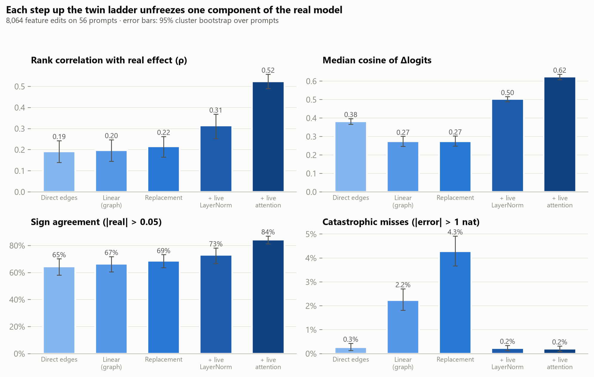
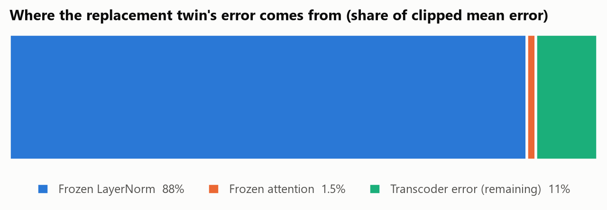
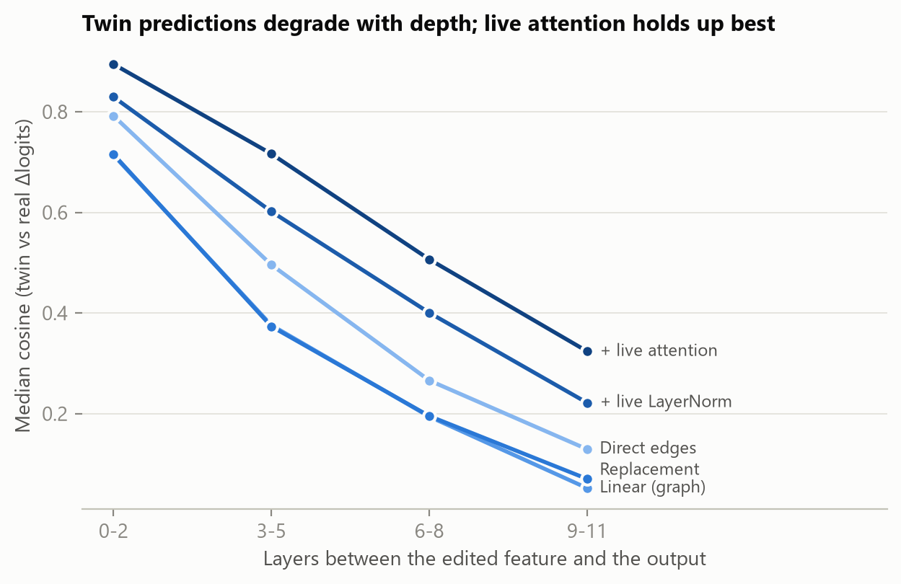
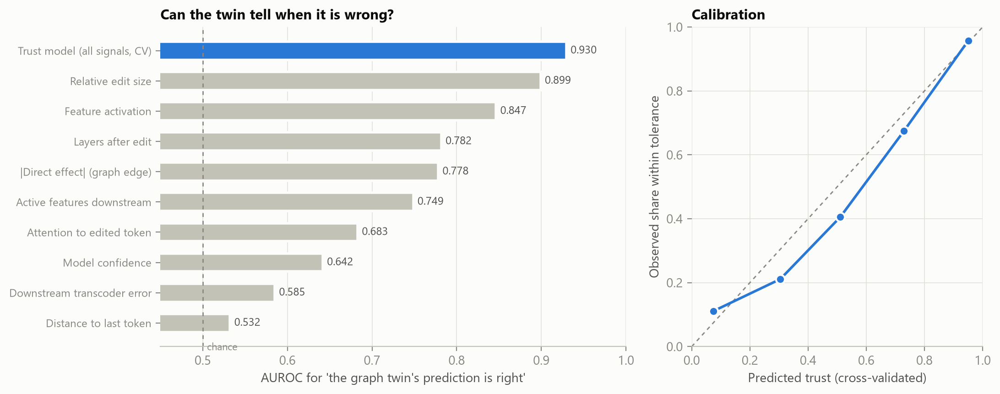
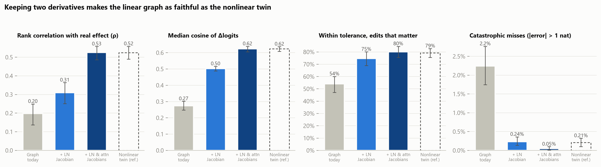
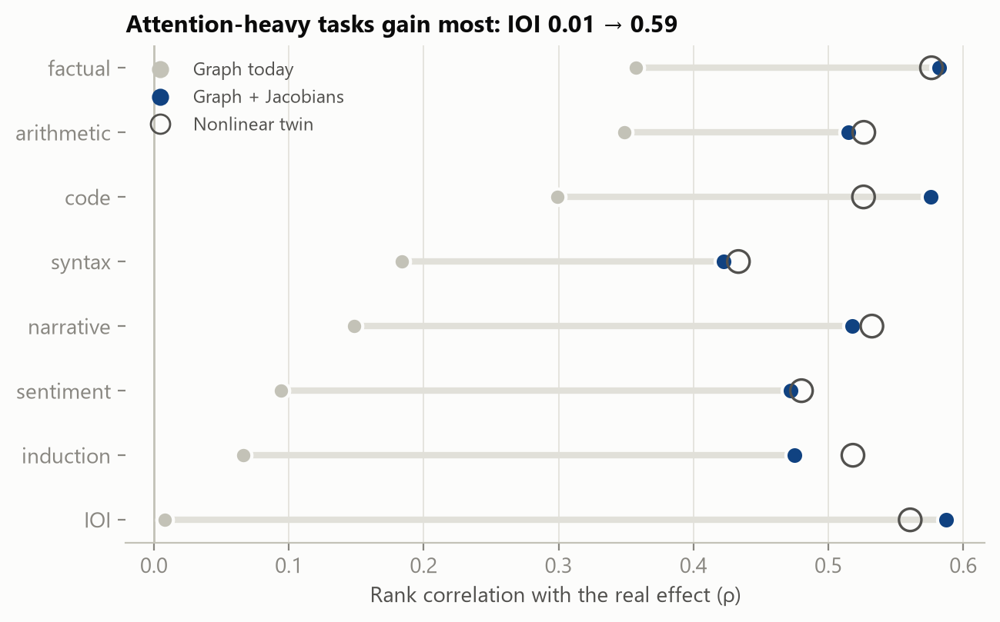
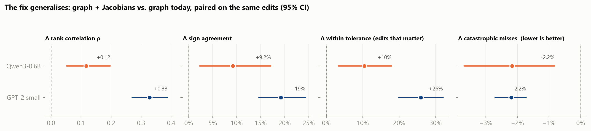

Technical report, TwinLens project, October 2026. Code, data and figures: https://github.com/SpiliosDimakopoulos/twinlens
Attribution graphs explain a language model's computation through an interpretable replacement model: MLPs are swapped for sparse transcoders, while attention patterns and LayerNorm scales are frozen at the clean run. Their edges are read as causal claims: "turn this feature off and the output moves by this much". We test those claims directly. On GPT-2 small with per-layer transcoders, we make 8,064 feature interventions (ablate or amplify ×2) across 56 prompts in 8 task families. We predict each intervention's effect with a ladder of twins, each unfreezing one more component of the real model, and then measure it on the real model.
Four findings:
The fix keeps the graph linear. Freezing a scale or a pattern drops its first-order derivative. Restoring both terms (the LayerNorm-scale Jacobian and the softmax-pattern Jacobian) still gives an exactly linear twin, so effects stay additive over sources. That linear twin matches the fully nonlinear replacement model on every metric:
The fix replicates on a second, architecturally different model, Qwen3-0.6B (§4.7): the paired improvement in ρ is +0.12 [0.05, 0.20] and catastrophic misses fall from 3.0% to 0.8%. The gain is smaller than on GPT-2 but significant on every metric.
The attribution graph's problem is therefore not linearity but the derivatives it drops. 4. The twin can tell in advance when to trust it. A logistic "trust model" over nine signals computed from the clean run alone predicts whether today's graph prediction will hold. On held-out prompts its AUROC is 0.93. On held-out task families it is 0.93 as well (0.88–0.98). Among the top attribution edges with a noticeable effect, the graph is right 54% of the time overall, 71% on the edges the trust model clears, and 22% on those it flags.
We ship this as a live tool. For any feature you click, TwinLens shows the effect predicted by every twin level, the real effect, and a trust score computed before the real model runs.
Mechanistic interpretability increasingly explains model behaviour through replacement models: sparse autoencoders, transcoders and cross-layer transcoders, assembled into attribution graphs (Dunefsky et al., 2024; Ameisen et al., 2025; Lindsey et al., 2025). Such a graph is a digital twin of the model's computation on one prompt. Like an industrial digital twin, it is useful only if its simulations agree with the real system under intervention. Ameisen et al. validate graphs with perturbation experiments, and note that the replacement model's agreement with the real model degrades with depth after an intervention. To our knowledge there is no systematic, per-intervention account of when the twin's counterfactual predictions fail, which frozen component causes the failure, and whether failure can be anticipated without running the real model. That third question matters in practice. A user reading a graph cannot re-run every edge as an experiment.
Model. GPT-2 small (124M parameters, 12 layers, 12 heads, d_model = 768). It runs on our own
~250-line PyTorch implementation (twinlens/core/gpt2.py), which exposes TransformerLens-style
hook points and reads weights through memory-mapped safetensors. The whole system (model, 12
transcoders, activation caches) fits in 0.82 GB of private memory on a laptop CPU. Logits match
Hugging Face GPT2LMHeadModel to 7×10⁻⁵ (max abs).
Twin features. We use the per-layer MLP transcoders for GPT-2 small of Dunefsky, Chlenski &
Nanda (2024): 24,576 ReLU features per layer. Each reads LayerNormPre(resid_mid) and predicts
mlp_out. We verified this convention empirically: at layer 8 it gives L0 ≈ 66 and FVU 0.41,
while the alternatives give FVU > 1. On an 87-token paragraph, splicing a transcoder in place of
its MLP recovers 63–94% of the loss gap to mean-ablating that MLP (layers 2, 5, 8, 11).
Validating the instrument. Before making any new measurement, the implementation reproduces
published GPT-2 small results. Each one is pinned as a test (tests/test_reproduction.py):
Fix a prompt and its clean run. A feature edit sets transcoder feature f at layer l and position p from its clean activation a to a′: 0 to ablate, 2a to amplify. We compare the change it causes in the log-probability of the clean top-1 token, Δlog p, under six models:
| level | downstream features | LayerNorm scales | attention patterns |
|---|---|---|---|
| 1 Direct edges | held at clean values | frozen | frozen |
| 2 Linear (graph) | ReLU gates frozen (linear) | frozen | frozen |
| 3 Replacement | recomputed (ReLU) | frozen | frozen |
| 4 + live LayerNorm | recomputed | live | frozen |
| 5 + live attention | recomputed | live | live |
| Fix A: graph + LN Jacobian | ReLU gates frozen (linear) | frozen + first-order term | frozen |
| Fix B: graph + LN & attention Jacobians | ReLU gates frozen (linear) | frozen + first-order term | frozen + first-order term |
| Real GPT-2 | real MLPs | live | live |
In every twin level, each MLP is replaced by its transcoder plus that layer's clean-run error
term (mlp_out − transcoder(mlp_in)), held fixed. So at zero perturbation every level
reproduces the clean logits exactly; this is tested for all six. In the real model, an edit
moves the feature's decoder direction, mlp_out[p] += (a′ − a)·W_dec[f], and everything
downstream is recomputed.
Level 2 is affine in the perturbation, which is tested. It is exactly the object an attribution graph linearises: graph edges are its partial derivatives. Level 1 keeps only the edited feature's direct path. Its prediction equals the gradient × activation attribution, and our tests check this equality to 1%. Because levels 3–5 each unfreeze one component, the gaps between consecutive levels attribute the twin's error to its sources.
Edits. For each prompt and each layer we take two groups of features:
Each feature is both ablated and amplified. BOS is excluded. The 56 prompts span 8 families:
factual recall, IOI, induction/copying, syntax, code, sequences, narrative and sentiment
(experiments/prompts.json). That gives 8,064 edits × 6 models.
Metrics.
Intervals are 95% cluster bootstraps over prompts (1,000 resamples).
Most edits barely matter. The median |real Δlog p| is 0.0024, and only 9.0% of edits move it by more than 0.05. Aggregate tolerance rates are therefore inflated by easy cases. We also report every headline number on this "noticeable effect" subset ("big" below).

| level | ρ (all) | ρ (big) | median cos | sign agree (big) | within tol (big) | catastrophic |
|---|---|---|---|---|---|---|
| 1 Direct edges | 0.19 [0.14, 0.24] | 0.27 [0.12, 0.39] | 0.38 [0.37, 0.40] | 64.6% [58.1, 70.2] | 73.1% [67.5, 78.3] | 0.3% [0.1, 0.4] |
| 2 Linear (graph) | 0.20 [0.15, 0.25] | 0.24 [0.09, 0.37] | 0.27 [0.25, 0.30] | 66.5% [60.5, 71.9] | 54.2% [47.4, 60.5] | 2.2% [1.8, 2.7] |
| 3 Replacement | 0.22 [0.16, 0.26] | 0.28 [0.16, 0.41] | 0.27 [0.25, 0.30] | 68.7% [63.6, 73.3] | 55.1% [49.1, 60.9] | 4.3% [3.7, 4.9] |
| 4 + live LayerNorm | 0.31 [0.25, 0.37] | 0.41 [0.26, 0.53] | 0.50 [0.49, 0.52] | 73.1% [66.8, 78.3] | 73.7% [67.8, 78.7] | 0.2% [0.1, 0.3] |
| 5 + live attention | 0.52 [0.49, 0.56] | 0.64 [0.56, 0.71] | 0.62 [0.61, 0.64] | 84.4% [81.2, 87.1] | 79.3% [75.7, 82.5] | 0.2% [0.1, 0.3] |
The graph twin is a weak counterfactual predictor, and it fails in the cases that matter most. For the 50% of edits taken from the top attribution edges, catastrophic misses rise to 4.2% at level 2, against 0.3% for random features. The edges a user is most likely to act on are the ones most likely to be badly wrong.
Reading a single edge beats propagating through the frozen linear twin. The direct-edge prediction has higher median cosine (0.38 vs 0.27), a higher within-tolerance rate on big edits (73% vs 54%), and almost no catastrophic misses (0.3% vs 2.2%). Propagating a perturbation through frozen LayerNorm amplifies it instead of renormalising it. As a result, adding the indirect paths makes the prediction worse.

Measured by clipped mean error (errors capped at 5 nats), frozen LayerNorm accounts for 88% of the replacement twin's error. Frozen attention accounts for 1.5%, and the transcoders (their reconstruction error, held fixed) for the remaining 11%.
The mechanism is easy to see in single cases. An amplified layer-0 feature whose decoder contribution is 50–90% of the residual-stream norm pushes the frozen-scale twin far outside the transcoders' training distribution. Downstream features then grow layer after layer, and in extreme cases the predicted change in log-probability exceeds 10⁷ nats. The real model, with live LayerNorm, renormalises the perturbation away.
Attention is a small share of mean error but a large share of ranking error. Making it live lifts ρ from 0.31 to 0.52 and sign agreement from 73% to 84%. Its errors are many and moderate, rather than few and catastrophic. The per-family breakdown agrees. At level 2, ρ is 0.01 on IOI and 0.07 on induction (both attention-mediated circuits) but 0.36 on factual recall. At level 5 all families sit between 0.43 and 0.58.

The median cosine between predicted and real Δlogits falls with the number of layers between the edit and the output, at every level. The decline matches the per-layer compounding Ameisen et al. describe. For the graph twin it goes from 0.71 (0–2 layers) to 0.05 (9–11 layers). For the live-attention twin it goes from 0.89 to 0.32.

The trust model predicts within tolerance for the graph twin from nine signals of the clean run, with no access to the real model's response. Under 5-fold cross-validation grouped by prompt:
The standardised coefficients are interpretable. Trust falls with edit size (−0.53), activation (−0.66), the number of layers to the output (−0.53), the number of active downstream features (−0.33), and attention from the output position to the edited token (−0.30). It rises with model confidence (+0.56).

Freezing a LayerNorm scale σ at its clean value is a zeroth-order approximation of σ. A first-order linearisation of the normalised output n = u/σ(u) around the clean point gives
dn = da − n₀ (n₀ · da) / d, where a = u / σ₀ is the frozen-scale output.
Freezing σ keeps only da. Similarly, freezing an attention pattern drops
dp = p₀ ⊙ (ds − Σₖ p₀ ds), with ds = (dq · k₀ + q₀ · dk) / √d_head,
together with the bilinear term in z = p·v, which we remove so that z = p₀v + dp·v₀.
Restoring these terms costs nothing in linearity:
tests/test_twin.py).| twin | ρ (all) | ρ (big) | median cos | sign agree (big) | within tol (big) | catastrophic | mean err |
|---|---|---|---|---|---|---|---|
| Graph today (frozen LN + attention) | 0.20 [0.14, 0.25] | 0.24 [0.07, 0.36] | 0.27 [0.25, 0.30] | 66.5% [59.6, 71.7] | 54.2% [47.1, 60.1] | 2.2% [1.7, 2.8] | 0.113 |
| Fix A: + LN Jacobian | 0.31 [0.25, 0.36] | 0.41 [0.28, 0.53] | 0.50 [0.49, 0.52] | 73.0% [67.4, 78.2] | 74.6% [69.0, 80.1] | 0.2% [0.1, 0.4] | 0.024 |
| Fix B: + LN & attention Jacobians | 0.53 [0.49, 0.56] | 0.66 [0.59, 0.72] | 0.62 [0.61, 0.64] | 85.7% [82.1, 88.8] | 80.1% [75.6, 84.6] | 0.0% [0.0, 0.1] | 0.019 |
| Nonlinear twin (live LN + attention) | 0.52 [0.49, 0.56] | 0.64 [0.56, 0.71] | 0.62 [0.61, 0.64] | 84.4% [81.6, 87.1] | 79.3% [75.5, 82.8] | 0.2% [0.1, 0.3] | 0.022 |

The gains are largest exactly where today's graphs fail: IOI ρ goes from 0.01 to 0.59 and induction from 0.07 to 0.48. These are the attention-mediated circuits, where freezing attention patterns removes the mechanism itself.
Payoff. Consider the edges a user would actually inspect: the top attribution edges, on edits with a noticeable effect (n = 718).
A one-line filter therefore turns a coin flip into a usable signal, without running a single extra intervention.
We replicated Fix B (graph + LayerNorm and attention Jacobians, level linear_fulljac) on a
second, architecturally different model: Qwen3-0.6B, which uses RMSNorm instead of LayerNorm,
grouped-query attention, RoPE, QK-norm and SwiGLU. We used its public circuit-tracer
transcoders (163,840 features per layer, mwhanna/qwen3-0.6b-transcoders-lowl0). The scope is
smaller than for GPT-2: 2,304 feature edits on 16 prompts (2 per task family), with edits in
layers 10-27 of 28 (the upper two thirds). The levels compared are direct edges, graph today
(linear), Fix A (adding the normalisation Jacobian, here RMSNorm including QK-norm), Fix B, and
the real model. The nonlinear replacement twins were not run on Qwen3, because a full
164k-feature encode per simulation is too slow on CPU.
The Jacobians are verified by tests on Qwen3 as well (tests/test_qwen.py): every level
reproduces the clean run, the linear levels are exactly affine, and Fix B agrees with the
live-norm/live-attention twin to within 5% on a 1% edit.
| Level | ρ [95% CI] | sign agree | within tol (big) | catastrophic | mean err |
|---|---|---|---|---|---|
| Graph today | 0.34 [0.22, 0.42] | 78.5% | 51.5% | 3.0% | 0.138 |
| Fix A | 0.42 [0.32, 0.50] | 85.6% | 58.6% | 1.4% | 0.083 |
| Fix B | 0.45 [0.36, 0.54] | 87.7% | 62.0% | 0.8% | 0.070 |
On induction prompts ρ rises from 0.04 to 0.28.

Paired improvement of Fix B over graph today (same edits, 95% cluster bootstrap over prompts):
All intervals exclude zero. The direction of the gain is the same on every metric, but its magnitude is smaller on Qwen3. One candidate reason is the larger residual transcoder error of this transcoder family, which no Jacobian can repair; we have not tested this. The gain is also not uniform across task families: it is largest on induction, syntax, sentiment and IOI, and roughly flat on code and narrative.
circuit-tracer transcoders, where we covered only the upper 18 layers and
far fewer edits (§4.7). Larger models and cross-layer transcoders, which the current
circuit-tracing work uses, remain untested.circuit-tracer library.make test # 33 tests, including the reproduction suite
make sweep # 8,064 edits, ~40 min on a laptop CPU (resumable)
python experiments/extend_sweep.py --modes linear_lnjac # Fix A, ~10 min
python experiments/extend_sweep.py --modes linear_fulljac # Fix B, ~15 min
python experiments/qwen_prepare.py # Qwen3 transcoders, ~6 GB, ~70 min
python experiments/fidelity_sweep.py --model qwen3 --per-family 2 --n-top 2 --n-random 2 # 2,304 edits, ~30 min
python experiments/analyze_generalization.py
make analyze # summary.json, trust_model.json, figures
make serve # dashboard at http://localhost:8000
The sweep's raw output (experiments/results/fidelity.parquet, 1.3 MB) is committed, so
make analyze reproduces every number above without re-running the sweep.